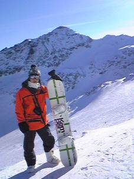

This homepage is created by Naoto
Yamabe
My favorite memories of journey all
over the world...
自己紹介

カナダ ブリティッシュコロンビア州 ブラッコム山山頂直下にて
本名：山部 直登(やまべ なおと)
1987年8月23日愛知県一宮市で生まれる(母の実家)
小学校1年生までは名古屋市で育つ。母校は名東区、北一社小学校。虫を捕るのが趣味のやせた少年。友達は少なく、一人で下校することが多かったという。この頃から早くも放浪癖があり、自転車で近くの公園に一人で遊びに行くことも多かった。
小学2年のとき三重県、桑名に引っ越す。藤が丘小学校へ転校。どういうわけか友達作りができるようになり、小学生時代は森を舞台に遊びまくる。エアガンを持ち込んでのサバイバルゲームにはまった。勉強した記憶はほとんど無い。
陵成中学校進学後、野球部に入部するが、へたくそだったため野球の練習はあまりさせてもらえず、外周に明け暮れた。体力は多少ついたが、1年のときは体重30kg代とまさにもやしのような体系。
中学2年頃からマイカル桑名のゲームセンターにはまる。モンスターゲート、競馬ゲーム(スターホース)に(当時では)多額の金を投資。周囲の仲間とはコインの売買をしていた。悲しいかな、非行に走り、親を悲しませてしまったのはこの頃。
中学3年の9月ごろから勉強開始。実力テスト校内3桁→最高3位へ。一番学力が伸びた時期。
名古屋市立名東高校進学。同時に名古屋市に再び戻る。
高校では2年まで水泳部に加入。タイムはそれほど伸びなかったが、筋力トレーニングの成果か、ある程度大人びた体つきになる。しかし、体重は結局56kg前後を推移し、以降増加はしていない。
高校2年の冬、志賀高原に友人らと体調不良を装って学校を休み、スキー旅行に出かける。ファンスキーで滑走中、無謀にも挑戦した上級コース中腹で転倒し、右足首の骨を3本骨折。全治3ヶ月。やや中途半端な感じで部活を引退。
高校2年終わりごろから河合塾へ入塾。名大を目指す。
高校3年。理系クラスへ。一番好きな科目は地理だった。授業中騒がしいクラスだったが、地理の先生だけはみんなをしかってくれた。教科書はほとんど使わず、地図帳とデータブックオブザワールドを駆使した授業に魅了された。
高3の3月。名大工学部合格。高校では総じて勉強中心の生活だった。自作パソコンを少しかじったりもした。
名古屋大学進学後、ワンダーフォーゲル部に入部。登山と海外旅行を楽しんだ。
富士山･･･4回登頂
北アルプス･･･100名山全制覇まであと3座ほど
南アルプス･･･100名山全制覇
鈴鹿山脈･･･サミッター
奥三河･･･小ピーク多数
座間味諸島(無人島)･･･サバイバル合宿。食料は米のみ持参。後はカサ貝および釣った魚、野草。
台湾･･･台北から入り、時計回りに自転車で3週間ほどかけてほぼ一周。
カナダ･･･冬のカナダ西部を舞台にレンタカーを借りて旅行。走行距離6300km。スノボ中に岩に激突し、軽い怪我。
大学3年で部活は引退。就職活動には熱が入らず、失敗。先輩に相談し、大学院への進学を決意。
名大大学院試合格(工学研究科)。その後卒業研究本格化。テーマは「アントコロニー最適化法による2行程プロセスの多目的最適計画」
院試後、北海道ツーリングへ。(往路のみ本州陸走)
卒業旅行ではインドネシアへ。行き先はジャワ島、ロンボク島、スマトラ島。ダイビングとジャングル探検を楽しんだ。
名古屋大学大学院工学研究科へ進学。
M1夏休みでは2度目のカナダへ。ロッキー山脈登山とユーコン準州、ドーソンシティでのオーロラ観測に成功。
M2の4月、資源開発会社内定。